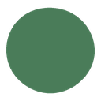
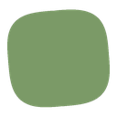
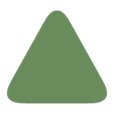

轨脚 · 账户/素材库projects · assets
我的项目与素材库：新建、打开、另存为云项目
2026 设计规范 · 品牌、界面、AI-native 一本读完



新设计稿：品牌标志直接使用门厅 Agent 的绿色软形体和白色眼睛；四个 Agent 共用软形体、白眼睛与轻微表情动效，各自用轮廓区分。左轨的图形只做身份识别，功能由所在入口和名称说明。
图标 28×28；容器 29×31；中文字 15px / 600；英文 Playfair 500、首字母 S 斜体、全大写。只用于登录页与官网；工作台左轨只显示门厅形体。
四个形体：门厅 / 总控与开合；Bingo / 右栏助手；空间 / 卡片；物料 / 卡片。门厅是总控与品牌标志，不作为空间或阶段切换项。
品牌色全产品只出现在 2 处：选中指示、发送键。语义色只做状态文字、状态点、错误描边，不做大色块。
先定字体家族，再定字号档位。界面正文与控件只用两族：中文 PingFang SC（Noto Sans SC → Microsoft YaHei 降级）、西文与数字 Inter（Arial 降级；本预览页以 Manrope 代显）。品牌字标英文是唯一例外，用 Playfair 衬线（见 00 节）。数字启用 tabular-nums；正文只用以下 7 档，强调靠字重 600，中文不用斜体。
同区三档（v2.5 硬规则）：同一视线区域（面板/弹层/工具栏/卡片组）同时可见字号 ≤3 档；CAP 11 与 P2 12 不同区并用——区域内需要更小的标注时，整区把 --fs-cap 重钉为 --fs-p2，使该区只剩「标题/正文/元信息」三档；品牌字标按 00 节自成体系不计档；禁止面板自建私有字号系统，局部只能重钉全局 token。
分工：一行混排时中文取中文字形、西文取西文字形，浏览器按栈自动各取各的。界面禁第三族（不引入圆体、手写体、衬线）；唯一例外是品牌字标英文用 Playfair 衬线（00 节），它只出现在字标，不进正文、控件与表格。
规矩：一档一个用途，不越档使用；同屏相邻层级至少跳一档（H1 下不接 H2 接 P1 属例外：模态标题下正文）；强调只用字重 600 与墨色，不用字号缩放造强调；中文永远不加字距，字距只属于英文大写标签。
4px 基准步进：组件内边距用 8 / 12 / 16，区块间距用 16 / 24，分区之间用 32 / 48。
| 断点 | 区间 | 形态 |
|---|---|---|
| ≤640 | 移动阅读态 | 单列，标题降档（H1→20、H2→18、H3→15），正文不变 |
| 641–1024 | 窄桌面 | 右栏可折叠 |
| 1025–1440 | 标准工作台 | 左轨 64 + 画布 + Agent 栏 300，16px 硬边界 |
| >1440 | 大屏 | 画布上限 1280 居中 |
全站通用 UI 图标统一为本地 Material Symbols Rounded：FILL 1、weight 300、grade 0，optical size 随字形尺寸调整。按钮、菜单、状态切换均使用同一套圆角字形语言，不混用描边库；只按 16 / 20 / 24 / 32px 尺寸阶梯缩放。四个 Agent 头像是角色资产，形体各异但眼睛、比例与呈现统一。E0 为默认——一切元素无阴影，分区靠 1px 发丝线；阴影只给浮层。
卡片、区块、按钮。1px hair 描边承担分区。
菜单、popover、tooltip、toast。y6 模糊 18 · 10%。
模态、抽屉，配 32% 墨色遮罩。y16 模糊 48 · 18%。
通用界面图标统一采用本地 Google Material Symbols Rounded 可变字体：FILL 1、weight 300、grade 0，按尺寸设置 optical size。图标圆角、填充和粗细由同一字体轴统一控制；字体已子集化并随产品本地加载。字体来源及 SIL Open Font License 见 frontend/public/fonts/MATERIAL-SYMBOLS-OFL.txt。PlotCraft 空间编辑符号、MaterialGlyph 缩略图与四种 Agent 形体属于领域 / 角色图形，单独保留。
图标尺寸：16px 行内、20px 控件、24px 面板 / 空态、32px 仅整页空态主图。交互目标至少 32×32。切换按钮使用同系列配对字形或同一字形配合选中底色，并设置 aria-pressed / aria-checked；禁用态用 --faint。加载图标之外不做旋转。
左轨四个 Agent 入口继续使用当前角色形体：门厅 / 总控与开合；Bingo / 右栏助手；空间 / 卡片；物料 / 卡片。绘制细节见顶部「门厅与 Agent 标志」。授权与来源：frontend/public/material-symbols/ATTRIBUTION.md。
5 类 × 5 态。悬停真实可试；其余状态为并排模拟。聚焦态统一 2px 外描边，触达区 ≥ 32px。发送键是全产品唯一的圆形绿钮。
规矩：悬停只「变深一档」（green-deep），按下再深一档并缩至 .94；全程 120ms 统一缓动，不加发光、不加投影、不做涟漪——克制是这个钮的全部设计。禁用态无过渡直接切 plane 底。生成中原位换墨底停止钮（T-05/十四节），不出现第二颗钮。
一块画布加三条边：无独立顶栏，左轨 64 · 画布 · 右 Agent 300 · 底部物料条。左轨固定四格：门厅负责总控与开合；Bingo 打开 / 收起右栏助手；空间打开空间卡片；物料打开物料卡片。
左轨只出形体，名称走 data-tip 悬停提示；轨脚依次是保存态、设置、账户/素材库。
我的项目与素材库：新建、打开、另存为云项目
切换总控并展开 / 收起左轨
设置、团队与权限演示
打开 / 收起右侧助手对话
分别打开对应卡片；两张卡片互斥。空间卡片包含场地、场景模板、环境与结构
拖入画布即成物件；不打断对话
场地重建：图纸、照片、地图圈画
+ 菜单composer新建空间、地图选址、图纸与照片
发布 / 分享卡片：二维码、预览、项目大纲
表格、弹窗、警告、加载——展示与反馈的四个面,全部沿用 E 层级与发丝线规矩。
| 物料 | 分区 | 数量 | 单价（元） |
|---|---|---|---|
| 宴会圆桌 | 主厅 | 24 | 380 |
| 折叠椅 | 主厅 | 192 | 45 |
| 签到台 | 入口 | 2 | 1200 |
当前画布有未保存的改动，载入后将覆盖现有布局。
网络连接超时，请检查本地服务后重试。
微交互 120ms、弹层 200ms、模态 300ms，统一缓动 cubic-bezier(.2, 0, 0, 1)；系统尊重「减弱动态效果」设置。
单行溢出省略 + title 提示
方案评审包包含平面图、物料清单与预算表，共 12 项内容，全部由 Agent 按活动简报自动汇总生成，可在评审前逐项修改。
多行 line-clamp 2
空状态、缺省图与只读态统一见下一节「十、缺省图 · 占位与缺省态」；错误与异常页见「十一、错误与异常」。
内容没到位时出现的「图」只有一种画法：浮台底 + 单色线稿图标 + 一行 CAP 说明。不画插画、不放截图、不加投影；加载中 / 内容缺省 / 加载失败三态各自成规，不互相顶班。
一个比例只保留一种构图：图标居中、CAP 在下；图标档位随尺寸走（24 / 20 / 16），缩放只换档位不重排、不裁文案。
| 用在 | 比例 | 尺寸 | 图标 | CAP 文案 |
|---|---|---|---|---|
| 物料卡预览 | 1:1 | 112 | Box · 24 | 暂无预览 |
| 预设 / 模板封面 | 1.7:1 | 187×110 | LayoutTemplate · 24 | 暂无封面 |
| 图纸 / 分享缩略 | 16:9 | 196×110 | FileImage · 24 | 预览未载入 |
| 成员头像 | 1:1 圆 | 40 / 32 | UserRound · 20 / 16 | 不写文案 |
| 列表小方图 | 1:1 | 48 | Box · 20 | 不写文案 |
| 规则 | 做法 |
|---|---|
| 底与线 | 浮台底 + 1px hair-soft；失败态只把描边换成 err，底色和尺寸都不动 |
| 图标 | 单色 faint（失败态 ink-soft）；一枚图只放一个图标，不叠角标、不加状态点 |
| 禁令 | 插画、渐变、截图、logo 水印、彩色投影、品牌绿——缺省图一律不用 |
| 进出 | 图到位后 120ms 淡入盖住占位；失败不弹 toast，原地 ghost「重试」 |
| 边界 | 缺省图只进 2D 容器；3D 画布空场地的地面由渲染器自绘，不贴缺省图 |
从左侧物料库拖入第一件设备，或让 Agent 按简报生成一版。
上传第一件物料，或切到公共模型直接取用。
新建的项目会保存在当前工作室，成员可共同参与。
换个名称，或清除筛选看全部。
编辑权在持有人手上；可以先看图，也可以申请接手。
场地多大、谁参加、要什么气氛；剩下的交给 Agent。
行内缺省只说明缺什么、给一个下一步：不做空卡、不放大插图。整页错误与画布错误见下一节「十一、错误与异常」。
| 规格 | 用在哪 | 尺寸 | 结构 |
|---|---|---|---|
| 全屏 | 画布、整页错误 | 最小高 240，居中 | 图标 24（主图标可 32）+ H3 + P2 + 主次两个动作 |
| 面板 | 右栏、抽屉、底条 | 最小高 150 | 图标 24（主图标可 32）+ H3 + P2 + 一个动作 |
| 行内 | 表格行、列表项 | 一行 36–40 | P2 一句 + text 钮；图标可省 |
只读用户不显示编辑类主动作，也不把按钮置灰——直接给「申请编辑权」。动作名与后续 toast 同名：空态「生成初始方案」→ 完成「已生成初始方案」。
错误只说三件事：发生了什么、你的东西还在不在、下一步点哪。语义色只做描边、图标与状态点，不做整屏红；一次只报一处，同一件事不在 toast 和弹窗里各说一遍。
| 层 | 用在哪 | 落位 | 结构 | 动作 |
|---|---|---|---|---|
| 整页 | 404 / 启动失败 / 方案已移出 | 白纸居中，最小高 240 | H2 标题 + P2 说明，不画插画 | 主：返回工作台 / 重新加载；次：下载本地草稿 |
| 画布 | 三维不可用（WebGL、显卡、渲染资源） | 替换画布，居中 | 图标 24 err + H3 + P2 + 折叠技术细节 | 主：重新加载；次：复制诊断信息 |
| 面板 / 行内 | 某条清单、某个预览没加载出来 | 原位，最小高 150 / 一行 36–40 | 图标 24 err（行内可省）+ P2 | 仅 ghost「重试」 |
| 操作 | 保存、发布、上传失败 | 顶部 toast，3.2s 自动退场 | err 状态点 + P1 | 文案里写出口：「重试上传」 |
破坏性动作（清空、覆盖、开始新方案）永远不做主按钮，且必须先给备份出口；错误页不显示错误码与堆栈。
通常是浏览器关闭了硬件加速。动作不会丢，打开加速再重新加载就能继续。
WebGL context creation failed: unable to initialize the GPU process.
主区不出现英文报错原文；技术细节默认收起、等宽 11px、可复制。同一错误不叠加 toast。
链接可能已失效，或方案被移出当前工作室。
本地服务可能还在启动，稍等再试一次。
整页异常不画插画、不给错误码：标题 8 字内说清状态，说明给下一步；404 / 500 只差标题和动作。
行内错误只占一行、只说一句、只给一个动作；不弹窗、不切走当前画面。
文本对纸面 ≥ 4.5:1（WCAG 2.1 AA）；键盘 Tab 顺序 = 视觉顺序；可交互元素触达区 ≥ 32px。
组件 CSS 禁止 hex 字面量，一切颜色经 L1；现有 token 命名（--green、--ink…）已是语义命名，全部归 L1，不重命名。
| 层 | 定义 | 命名法 | 示例 | 引用权限 |
|---|---|---|---|---|
| L0 primitive | 原始值，与用途无关 | --p-<色>-<阶> | --p-green-500: #4A7C59 | 只准 L1 引用 |
| L1 semantic | 按用途命名 = 本规范全部 token | 沿用现名 | --green: var(--p-green-500) | 组件 CSS 唯一入口 |
| L2 component | 组件私有别名，按需才建 | --<组件>-<用途> | --agent-accent: var(--green) | 仅该组件文件 |
2026 赛季不支持全产品暗色模式。唯一深底场景 = 官网 hero / 黑底卡片，使用中性反白文字；门厅 Agent 标志本身沿用绿色形体与白色眼睛。若未来立项暗色，只允许改 L0/L1，组件层零改动。
| 外层 | 内边距 | 内层圆角 | 做法 |
|---|---|---|---|
| 模态 --r-lg 18 | 24 | — | 发丝线分区 |
| 卡片 --r-md 14 | 16 | — | 发丝线分区 |
| 浮岛 pill | 8 | 8 | 取内边距值 |
禁则：32px 以下控件禁用 --r-sm 10（近胶囊临界）；胶囊只属于发送键。
"SF Mono", "Cascadia Code", "JetBrains Mono", Consolas, "Courier New", monospace · 11–12px · 禁用于正文与 Agent 台词
改值 / 新增：先改规范（版本 +0.1）→ 用户点头 → 改 globals.css → 全库 grep 校验无残留 hex、无未登记 token。废弃 token 标注 deprecated 留到下赛季清。
「AI 在干活」不是加载态，是第一公民的界面形态：过程即界面 · 克制的机器感 · 不确定性诚实 · 速度是美学 · 语言即 UI。
已按提案布置：青序 · 香氛快闪
读简报 → 摆座位 → 核对出口（已完成，收起）
这是提案，尚未落盘 · 按「40 人 · 室内 12 × 9 m」
座位 16 / 40 · 过道 900mm · 出口净宽 1200mm
| 场景 | 规则 |
|---|---|
| 生成中 | 分步叙述逐行追加（P2 muted）；确认钮生成完才出现；发送键原位变停止钮 |
| 流式输出 | 尾随 1px 墨色光标闪烁 800ms；文本可选中复制；上滑即停自动滚动；aria-live 节流 800ms |
| 可撤销 | 落盘后 8s 内 toast 给「撤销」；一律走 onApply 进撤销历史 |
| 提案卡 | 恰一颗主行动（绿）；数字 tabular-nums + 来源行；信息不足列「还差什么」，不猜 |
| Agent 台词 | 一动一句至多两句；做完才报不预告；禁「抱歉 / 作为 AI / 请稍等」 |
| 机器感禁则 | 禁紫渐变 / 发光 / sparkle 泛滥；Sparkles 仅「生成 · Agent」一处；AI 产物与人工产物画布上一视同仁，不加水印边框 |
白面板 + 1px 左边线；transcript 非厚气泡（用户 plane 底、AI 直排文字）；composer 底部常驻，发送键是全产品唯一绿色圆形。
生成中 = 分步叙述逐行追加；完成 = 折叠成一行摘要，正文只留结果；中断 = 如实标注「未完成」，保留已生成部分。过程永远可见、可停、可撤。
逐 token 渲染，尾随 1px 墨色光标闪烁 800ms；上滑即停自动滚动，出现「回到底部」；屏幕阅读器节流 800ms 批量播报。流式期间文字可选中复制。
每张提案卡恰一颗主行动（绿）；数字 tabular-nums 且带来源行；信息不足列「还差什么」，不用默认值填满后再道歉。
确认落盘后顶部居中浮出 toast，3.2s 内给「撤销」；画布改动一律走 onApply 进撤销历史，AI 产物与人工产物一视同仁。
五个状态，两条铁律：确认钮只在「提案待确认」出现一次；停止/撤销永远同位可达，不并列第二套控件。
| 状态 | 画布 | Agent 区 | 退出口 |
|---|---|---|---|
| 空闲 | 空场地自绘地面，不贴占位图 | 简报 + 文字链「空白场地 · 12 × 8 m」 | 直接一句话 / 点链出方案 |
| 生成中 | 不改画面（画布静默，T-06） | 分步叙述；发送键原位变停止钮 | 停止 → 已中断 |
| 提案待确认 | 预览浮层 | 提案卡（状态行 + 来源行 + 一颗绿钮） | 确认 / 改方案 / 收回 |
| 已落盘 | 实摆 + 进撤销历史 | 结果一句 + 「已按提案布置 · 可撤销」 | toast 撤销（8s）· ⌘Z 永久可回 |
| 已中断 | 保持改动前画面 | 如实标注未完成 | 继续生成 / 放弃这次 |
| 场景 | 时长 | 规格 |
|---|---|---|
| 分步叙述行追加 | 120ms | 淡入 + 上移 2px，逐行错峰 60ms |
| 提案卡出现 | 200ms | 淡入 + 上移 2px；不弹跳、不缩放 |
| 光标闪烁 | 800ms | step-end 循环；reduced-motion 时静止常亮 |
| toast 浮出 / 退场 | 200ms | 顶部居中；退场不等用户，8s 上限 |
| 流式自动滚动 | 跟随 | 用户上滑即停，永不拉回 |
以下案例图为手绘线稿示意（非截图），参照一线 AI 产品的交互模式自绘，离线可用。每例两行：借鉴收进本规范，弃用标明为什么不。顺序对应十五节五原则。
借鉴：对话在左不吃满，画布始终是主角；确认钮长在对话流里，不盖画布。弃用：全屏聊天窗（画布消失＝工作台消失）；对话气泡铺满屏。
借鉴：进度是叙事（步骤名），不是转圈；流式尾随光标；停止钮与发送键同位。弃用：全屏 spinner、进度条假动画、生成中锁死整个界面。
借鉴：状态行写「提案≠结果」；数字带来源行可核对；恰一颗主行动。弃用：生成中就给确认钮；一次冒出多颗绿钮；默认值填满后再道歉。
借鉴：结论旁挂来源；信息不足时把「差什么」变成可点的下一步。弃用：无来源的断言；用假设值填满方案；「猜错了」再道歉。
借鉴：toast 给出口且限时；AI 与人共用一条撤销时间线。弃用：AI 产物加「AI 水印边框」区别对待；撤销要进二级菜单。
前四格是行业内最常见的「AI 感」装饰路径，全部与「冷石画廊」立场冲突；最后一格是本规范的收法：结果句 + 来源 + 一颗绿钮。
思维导图、系统架构、请求流程、渲染管线、Token 分层——五张图把十四~十六节的文字规则钉成一张可指着的图。均按本规范色板自绘。
这张图就是 isVenueSizeOnly 的行为契约：分流条件、两条路径各自的界面后果、汇合点在落盘与撤销。
幕景由多个 Agent 分工协作。晴光已被当前 Agent 阵容替代，不再作为产品级单一助手或默认吉祥物。品牌主标采用门厅形体；各 Agent 使用一致的绿色软形体、白色眼睛与各自轮廓表达职责。
| 身份 | 形体 | 职责 / 使用位置 |
|---|---|---|
| 幕景品牌 / 门厅 | 绿色软形体 + 白色眼睛 | 产品入口与总控；官网、登录页、工作台品牌标志 |
| Bingo | 球形 | 布置与方案 Agent |
| 空间 | 立方体形 | 场地、场景模板、环境与结构 |
| 物料 | 三棱锥形 | 物料库与场景物件 |
四种形体共用眼睛比例、绿色色阶与轻微表情动效。门厅标志直接复用门厅形体，不叠加旧绿点；Agent 职责由名称和界面文案说明，不靠颜色区分。